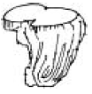
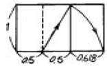
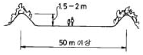
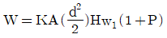
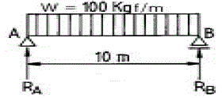
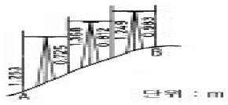

조경기사 (2005-03-06 기출문제)
1과목: 조경사
1. 보르 비 콩트(Vaux-le-Viconte)에 사용된 중요한 조경기법이 아닌 것은?
- 주축선에 의한 비스타(vista)조성
- 다양한 원로
- 장식화단
- 가산(mound)
(정답률: 90%)

2. 조경식물의 한자명을 우리말로 적은 것 중 틀린 것은?
- 만다라화(曼多羅花) : 동백나무
- 자미(紫薇) : 찔레나무
- 자형(紫荊) : 박태기나무
- 하(荷) : 연
(정답률: 58%)
3. 다음 중 무어족의 옥외공간 처리 솜씨를 엿볼 수 있는 대표적인 것은?
- Melbourne Hall
- Villa d'Este
- Alhambra Palace
- Belvedere garden
(정답률: 79%)
4. 일본의 이도헌추리(離島軒秋里)가 제시한 석조법(石組法)의 기본 형태인 5행석(五行石)중 다음 그림의 명칭은?

- 심체석(心體石)
- 영상석(靈象石)
- 지형석(枝形石)
- 체동석(體胴石)
(정답률: 59%)
5. 다음 설명 중 찰스 엘리엇(Charles Eliot)에 대한 내용으로 가장 옳은 것은?
- 옴스테드와 함께 센트럴 파크를 설계했다.
- 수도 워싱턴 계획을 수립한 도시계획가이다.
- 최초로 미국 주립공원을 계획했다.
- 최초로 광역공원계통을 수립했다.
(정답률: 69%)
6. 다음 중 각 나라의 조경양식을 짝지은 것으로 잘못된 것은?
- 이태리 - 노단 건축식
- 프랑스 - 평면 기하학식
- 영국 - 사의(寫意)주의에 입각한 풍경식 정원
- 한국 - 자연 풍경식
(정답률: 70%)
7. 일본의 전형적인 지당(池塘) 중심의 정토정원(淨土庭園)을 꾸미는데 있어서 공식처럼 되어 있는 구성요소가 옳게 연결되어 있는 것은?
- 남문-홍교(虹橋)-중도(中島)-평교(平橋)-금당(金堂)
- 남문-평교(平橋)-중도(中島)-홍교(虹橋)-금당(金堂)
- 남문-반교(盤橋)-중도(中島)-홍교(虹橋)-금당(金堂)
- 남문-평교(平橋)-홍교(虹橋)-중도(中島)-금당(金堂)
(정답률: 27%)
8. 이탈리아 르네상스의 정원에 있어서 건물과 정원의 배치 방식에 해당되지 않는 것은?
- 직렬형
- 병렬형
- 직렬·병렬 혼합형
- 격자형
(정답률: 92%)
9. 다음 중 중국식 탑을 영국의 큐정원(Kew Garden)에 도입한 사람은?
- Alexander Pope
- William Chambers
- Joseph Addison
- Richard Steele
(정답률: 90%)
10. 다음 내용 중 발굴 조사를 통해 밝혀진 경주 안압지의 조경수법은?
- 좌우 대칭의 기하학적인 구성으로 되어 있다.
- 바닷돌을 사용하여 넓은 바다를 연상할 수 있도록 조석하였고, 수위(水位)를 조절하였다.
- 회유식(回遊式)정원의 수법을 도입하여 산책로의 기능을 강화하였다.
- 축산고산수(築山枯山水)수법으로 꾸몄다.
(정답률: 87%)
11. 18세기 서양 조경사적인 표현상의 흐름을 지배한 영향이 가장 바르게 연결된 것은?
- 고전주의 - 중국의 영향 - 자연주의 운동
- 문예주의 - 미국의 영향 - 자연주의 운둥
- 인문주의 - 미국의 영향 - 자연주의 운동
- 낭만주의 - 중국의 영향 - 자연주의 운동
(정답률: 66%)
12. 조경사 중 중국정원의 특징을 기술한 것으로 틀린 것은?
- 북부지방은 신선사상이, 남부지방은 노장사상이 정원의 주 배경을 이루고 있었다.
- 조경재료에 있어서는 북부지방은 화훼 본위이고, 남쪽 지방은 암석 본위인 정원이 일반적이었다.
- 양식면에서는 자연을 지배하고자 하는 경향이 있는 기하학식 정원이 많았다.
- 미적인 원리면에서는 대비의 강조가 현저하였다.
(정답률: 72%)
13. 한옥이 주택공간상 사랑채의 분리로 사랑마당 공간이 생겼는데, 이 사랑마당 공간의 분할에 가장 많은 영향을 미쳤다고 볼 수 있는 것은?
- 불교사상
- 유교사상
- 풍수지리설
- 도교사상
(정답률: 96%)
14. 우리나라의 궁궐 조경 수법의 특징에 속하지 않는 것은?
- 후원(后苑), 후정(后庭)의 발달
- 경사지의 돈대(墩臺)처리
- 아름다운 정자수(整姿樹)
- 굴뚝, 담장 등의 수식, 미화 처리
(정답률: 39%)
15. 한국 조경사에는 석교(石橋), 목교(木橋), 징검다리, 외나무다리 등 다양한 다리가 설치 되었는데, 이 중에 외나무다리를 설치한 조경유적은?
- 전남 담양의 소쇄원(瀟灑園)
- 경복궁 향원지(香遠池)
- 경주 안압지(雁鴨池)
- 남원 광한루지(廣寒樓池)
(정답률: 86%)
16. 다음 중 중세 수도원의 회랑식 중정(Cloister Garden)에 대한 설명으로 옳지 않은 것은?
- 중정은 4부분으로 구획되어 있다.
- 중정의 중앙에는 분수가 설치되어 있다.
- 로마 주택의 페리스틸리움의 구조와 동일하여 열주 사이로 통행이 자유롭다.
- 수도원의 다른 건물들에 의하여 둘러싸여 있으며, 남향으로 배치되어 있다.
(정답률: 73%)
17. 조선(朝鮮)시대의 정원은 자연과의 비례에서 다음의 어느 것과 가장 가까운가?
- 중국 청조(淸朝)시대
- 일본 헤이안(平安)시대
- 영국 낭만주의 시대
- 영국 르네상스 시대
(정답률: 65%)
18. 이태리 르네상스 정원에서는 노단이 중요한 경관요소로 등장하게 된다. 특히 중심축선 상에서의 노단처리는 매우 중요한 과제가 되었는데, 이 경우 주로 어떤 요소를 통해 처리하는 것이 일반적인가?
- 물
- 건물
- 식물재료
- 동굴
(정답률: 80%)
19. 현재 '북해공원'이라 불리우는 것은 다음 중 어느 곳과 관련이 있는가?
- 경림원
- 원명원
- 이화원
- 서원
(정답률: 48%)
20. 프랑스 풍경식 정원으로 루이 16세의 왕비인 마리 앙뜨와네트와 관련이 있는 곳은?
- 에름농빌(Ermenonville)
- 쁘띠 트리아농(Petit Trianon)
- 모르퐁텐느(Morfontaine)
- 마르메종(Malmaison)
(정답률: 95%)
2과목: 조경계획
21. 스키장의 계획시 유의사항으로 적합치 않은 것은?
- 활강코스의 경사도는 15% 정도로 똑같이 균일해야 한다.
- 코스의 경사 방향은 북동향이 제일 좋다.
- 스키장의 규모는 일정치 않으나 10ha이상 이어야 좋다.
- 기후는 겨울의 강수량이 많으면서 적설기에 비오는 날이 적은 곳이어야 한다.
(정답률: 75%)
22. 국토의계획및이용에관한법률에 의하여 관리지역을 구분, 지정하여 도시 관리계획으로 결정할 수 없는 지역은?
- 보전 관리지역
- 경관 관리지역
- 생산 관리지역
- 계획 관리지역
(정답률: 39%)
23. 스타이니츠(Steinitz)는 도시환경에서의 형태와 행위 사이의 일치성을 세가지 유형으로 분류 하였다. 다음 중 거리가 먼 것은?
- 영향의 일치성
- 밀도의 일치성
- 타입의 일치성
- 강도의 일치성
(정답률: 64%)
24. 프리드만(Friedmann)이 제시한 옥외공간 이용후 평가시 수행하여야 할 분석 사항과 비교적 관련이 없는 것은?
- 사전환경영향평가서
- 이용자 분석
- 설계관련 행위 분석
- 주변 환경 분석
(정답률: 75%)
25. 해안에 연접하여 공업단지를 조성하고자 할 때 환경영향 평가 항목 중 물리적 환경요소에 속하는 것은?
- 기존취락의 이전
- 수질오염
- 주민의 소득
- 노동력의 확보
(정답률: 79%)
26. 주택단지 배치 계획시 주거군(住居群)의 조망이 양호하도록 배치하는 방법 중 적합치 못한 방법은?
- 단지의 지형조건을 고려하여 최적 위치 및 적정 높이를 결정하여 배치한다.
- 각 방향의 경관을 조망할 수 있는 위치에 주택을 배치 한다.
- 밑에서 올려다 보는 것보다 위에서 내려다 볼 수 있도록 배치한다.
- 높은 지역에는 저층건물, 낮은 지역에는 고층건물을 배치한다.
(정답률: 78%)
27. 고속도로 조경계획의 목적이 아닌 것은?
- 고속 주행 차량의 안전성 도모
- 부대시설과의 조화
- 대규모 경관의 연속성 확보
- 주변 마을주민의 편익성 제공
(정답률: 73%)
28. 다음 래드번(Radburn) 계획과 가장 거리가 먼 개념은?
- 전원도시
- 보차 분리
- 슈퍼블록(super-block)
- 쿨데삭(cul-de-sac)
(정답률: 47%)
29. 다음 자연환경보전법에 대한 내용 중 틀린 것은?
- 자연환경보전에 대한 기본방침의 수립 등에 관한 사항을 정함
- 자연환경보전에 관한 기본이념을 담은 기본원칙 설정
- 녹지보전지역에 대한 출입제한에 관한 사항을 정함
- 생물종의 다양성을 보호하기 위하여 특정 야생 동·식물지정 보호
(정답률: 67%)
30. 다음 중 조경계획 및 설계의 3대 분석과정에 해당하지 않는 것은?
- 물리·생태적 분석
- 환경영향평가 분석
- 사회·행태적 분석
- 시각·미학적 분석
(정답률: 71%)
31. 하나의 도시지역안에 있어서 도시공원법상 정해진 도시공원 면적의 기준으로 가장 옳은 것은?
- 당해 도시지역안에 거주하는 주민 1인당 2m로 한다.
- 당해 도시지역안에 거주하는 주민 1인당 4m로 한다.
- 당해 도시지역안에 거주하는 주민 1인당 6m로 한다.
- 당해 도시지역안에 거주하는 주민 1인당 10m로 한다.
(정답률: 91%)
32. 다음 중 고대주택정원의 public area의 조성개념이 아닌 것은?
- 진입공간
- 전이공간
- 다양한 변화
- 단순성
(정답률: 75%)
33. 근린공원 계획시에는 근린공원의 개념과 성격에 대한 명확한 이해가 선행되어야 한다. 다음 사항 중 근린공원의 개념 정의에 가장 적합하지 않는 설명은?
- 불특정 다수의 시민을 위한 공원
- 도보접근 내에 있는 여러 계층의 주민들에게 필요한 시설과 환경을 갖춰주는 공원
- 주민의 규모, 구성 및 행태를 비교적 정확하게 파악하여 조성될 수 있는 공원
- 일상 생활권 내에 거주하는 시민을 위한 공원
(정답률: 45%)
34. 자연공원법에 의한 공원계획의 내용에 포함되지 않는 것은?
- 공원용도지구계획
- 공원시설계획
- 공원배치계획
- 공원관리계획
(정답률: 39%)
35. 다음 관광지 계획에 대한 설명으로 틀린 것은?
- 관광지의 유치권은 대도시로 부터의 거리에 따라서 영향을 받는다.
- 유치권이란 그 관광지에 사람이 모여들 수 있는 행동권을 말한다.
- 관광지를 중심으로 보면 보완권은 경합권보다 면적이 거의 2배 정도가 된다.
- 관광자원 시설의 가치, 지명도 등도 유치권에 영향을 미친다.
(정답률: 79%)
36. 국토의계획및이용에관한법률상의 녹지지역 세분에 해당되지 않는 것은?
- 보전녹지지역
- 공원녹지지역
- 생산녹지지역
- 자연녹지지역
(정답률: 83%)
37. 다음 도시공원의 설치와 규모에 관한 기준을 설명한 것으로 잘못된 것은?
- 어린이공원의 유치거리는 250m, 면적은 1,500m2 이상이 기준이다.
- 근린공원에는 근린생활권, 도보권, 도시지역권, 광역권 근린공원이 있다.
- 도로, 광장 및 관리시설은 당해 도시공원을 설치함에 있어서 필수적인 공원시설로 한다.
- 완충 녹지는 도시경관을 고려하여 반드시 10 ~ 20m의 폭으로 표준이다.
(정답률: 67%)
38. 토지이용계획에 관한 서술 중 옳지 않은 것은?
- 계획구역내의 토지를 계획·설계의 기본목표 및 기본구상에 부합되도록 구분하고 용도를 지정하는 것이다.
- 토지가 지니고 있는 본래의 잠재력이 기본적 고려사항이 된다.
- 이용행위의 기능적 특성을 고려한 행위 상호간의 관련성에 따라서 토지이용이 구분된다.
- 적지분석은 토지의 잠재력과 사회적 수요에 기초하여 각 용도별로 행해지므로 동일지역이 몇 개의 용도에 적합한 경우는 없다.
(정답률: 75%)
39. 도시공원안의 면적(규모)과 도시공원 내 건축물의 건폐율을 연결한 것 중 올바른 것은?
- 체육공원 - 면적 : 3만m2 - 10만 m2 미만, 건폐율 : 15/100 이하
- 근린공원 - 면적 : 10만 m2 이상, 건폐율 : 15/100 이하
- 도시자연공원 - 면적 : 30만 m2 - 50만 m2 미만, 건폐율 : 2/100 이하
- 묘지공원 - 면적 : 전부 해당 건폐율 : 30/100 이하
(정답률: 5%)
40. "어떤 지역에서 레크리에이션의 질을 유지하면서 지탱 할 수 있는 레크레이션 이용의 레벨"이라는 Wagar의 정의는 다음의 무엇에 관한 설명인가?
- 자연완충능력
- 레크레이션 한계수용능력
- 레크레이션 자원잠재능력
- 생태적적정효과
(정답률: 88%)
3과목: 조경설계
41. 정원 구성재료 중 점(点)적인 요소가 아닌 것은?
- 벤치
- 병목(竝木)
- 분수
- 해시계
(정답률: 77%)
42. 조경시설물의 역할로서 틀린 것은?
- 건축 외부환경을 풍부하게 해준다.
- 사람의 옥외활동을 유도하거나 통제해준다.
- 사람의 옥외활동을 다양하고 쾌적하게 해준다.
- 건축 내부공간과 외부공간을 적절히 분리해준다.
(정답률: 64%)
43. 다음의 균형에 대한 설명 중 잘못된 것은?
- 대칭적 균형은 '형식적' 균형이며 균형이 정적인 느낌을 자아낸다.
- 비대칭적 균형은 '비형식적'균형이며 그 변화와 대비는 시각적 흥미를 더해 준다.
- 작고 복잡한 형은 더 크고 안정된 형에 의해 균형이 이루어진다.
- 크고 질감을 갖고 있는 형은 작고 질감이 있는 것과 균형을 이룬다.
(정답률: 43%)
44. 옥외계단 설계 시 축상과 답면과의 관계를 고려하여 축상을 15cm로 하였다. 이 경우 답면의 길이는?
- 20 ∼ 25cm
- 25 ∼ 30cm
- 30 ∼ 35cm
- 35 ∼ 40cm
(정답률: 67%)
45. 치수기입에 대한 설명 중 틀린 것은?
- 치수의 단위는 mm를 원칙으로 하고 단위 기호도 기입 한다.
- 치수 기입은 치수선 중앙 상부에 기입하는 것이 원칙이다.
- 치수는 아라비아 숫자로 나타낸다.
- 협소한 간격이 연속될 때에는 인출선을 써서 치수를 기입한다.
(정답률: 62%)
46. 다음 그림은 무엇을 작도한 것인가?

- 황금비의 직사각형
- 정수비의 직사각형
- 등차 수열비의 직사각형
- 루우트비의 직사각형
(정답률: 67%)
47. 다음 중 경관 단위(Landscape Unit)를 가장 적절하게 설명하고 있는 것은?
- 경관 단위는 지형 및 지표상태에 따라서 구분된다.
- 경관 단위는 토지 이용 구분과 동일하다.
- 경관 단위는 전망이 좋고 나쁨에 따라서 구분된다.
- 경관 단위는 경관의 구성요소 중 주로 랜드마크를 중심으로 구분된다.
(정답률: 68%)
48. 조명시설에 관한 설명으로 가장 바르게 설명된 것은?
- 보행로의 조명은 3룩스(lx) 이상의 밝기를 적용한다.
- 보행등의 배치간격은 설치 높이의 5배 이상의 거리를 확보하는 것이 좋다.
- 경관 조명시설이란 자연 경관의 아름다움을 강조하기 위해 산책로를 따라 시설하는 특수 조명시설을 말한다.
- 경관조명시설은 경관에 대한 특수한 조명을 말하는 것으로 야간 이용시의 안전과 방범을 고려할 필요가 없다.
(정답률: 45%)
49. 도시의 평지에서 공원을 설계할 때 그림과 같은 기법으로 단면처리를 하는 경우가 많다. 이에 대한 설명으로 가장적 합치 않은 것은 ?

- 공간의 명확한 구분을 위하여
- 좁은 공간을 시각적으로 넓게 인식할 수 있도록
- 부족한 식재공간의 확보를 위하여
- 외부로의 시선 차단을 위하여
(정답률: 47%)
50. 퍼골라(pergola)의 높이는 보통 몇 m 정도가 가장 적당한가?
- 1.2 ~ 1.8 m
- 2.2 ~ 2.6 m
- 3.5 ~ 4 m
- 4.5 ~ 5 m
(정답률: 90%)
51. 다음에서 대칭 균형 원리의 예로 적합하지 못한 것은?
- 불국사 대웅전
- 독립문
- 낙선재
- 파르테논신전
(정답률: 80%)
52. 시각 효과 공간을 크게 만들기 위한 방법으로 틀린 것은?
- 거리감을 높이기 위해 주로 작은 수목을 이용한다.
- 제한된 공간에서 그 공간의 경계를 일단 감추게 한다.
- 평면구성에서 사선이나 곡선을 주로 사용한다.
- 붉은색 계열의 원색을 사용한다.
(정답률: 59%)
53. 학교 운동장 포장면의 정지작업을 위한 설계에 대한 설명 중 가장 적합한 것은?
- 운동장의 표면은 원활한 배수를 위하여 중심부 양측으로 10% 정도의 경사를 주는 것이 좋다.
- 운동장의 배수는 편구배가 바람직하며, 5% 내외가 좋다.
- 운동장 표면은 원활한 배수를 위하여 기울기는 외곽방향으로 0.5 ~ 1%를 표준으로 한다.
- 운동장의 배수는 편구배가 바람직하며 1% 내외가 좋다.
(정답률: 68%)
54. 공원의 휴식공간에 설치하고자 하는 음수대(飮水臺)의 디자인에 영향을 주는 요소가 될 수 없는 것은?
- 사용대상
- 사용목적
- 배수구
- 관리인의 유무
(정답률: 50%)
55. 정리된 경관, 절약된 색채, 잘 배합된 색채대비는 쾌적한 인공환경 창출의 한 요소이다. 아파트, 건축물, 그리고 가로 시설물 등 주거환경에 대한 색채의 기능적 대응으로서의 색채계획을 특히 무엇이라고 하는가?
- 색의 혼합(Color mixture)
- 색채 조절(Color conditioning)
- 색채 대비(Color contrast)
- 색의 연상(Color association)
(정답률: 62%)
56. 다음 사항 중 수자(水姿) 패턴의 유형에 속하지 않는 것은 ?
- 낙수형
- 분출형
- 유수형
- 수평형
(정답률: 75%)
57. 다음 직선(直線)에 대한 심리적인 영향을 설명한 것 중 틀린 것은?
- 강직하고 남성적이다.
- 단순하고 안정적이다.
- 초조하고 불안정하다.
- 명확하고 직접적이다.
(정답률: 90%)
58. 설계도에 관한 다음 설명 중 틀린 것은?
- 설계도는 설계의 과정에 따라 기본설계도와 실시설계도로 구분된다.
- 기본설계는 기본계획이라 하기도 하며, 실시설계는 기본설계라 부르기도 한다.
- 설계도는 배치도, 평면도, 입면도, 단면도 등으로 구성된다.
- 설계도를 그려서 표현하는 작업을 제도라 한다.
(정답률: 66%)
59. 린치(K. Lynch)가 주장하는 도시경관의 5대 구성요소가 아닌 것은?
- 매스(mass)
- 통로(paths)
- 모서리(edge)
- 랜드마크(landmark)
(정답률: 95%)
60. 다음 항목 가운데 자연적인 형태 주제에 해당하지 않는 것은?
- 유기체적 모서리형(organic edge)
- 집합과 분열형(clustering and fragmentation)
- 나선형(spiral)
- 불규칙 다각형(irregular polygon)
(정답률: 36%)
4과목: 조경식재
61. 조경 수목을 심을 때에 관한 기술 중 가장 옳은 것은?
- 식재전에 미리 시비하여 두며 직접 뿌리에 닿도록 해야 효과적이다.
- 식혈은 뿌리분 정도의 크기로서 중앙부를 낮게 파두는 것이 좋다.
- 흙채워 심기일 경우 뿌리분과 흙이 밀착하도록 단단히 다져 심는다.
- 물조임 심기일 경우 막대기로 다지면 불투수층이 생기므로 피해야 한다.
(정답률: 69%)
62. 다음 중 Allee 성장형에 대해 적당한 것은?
- 밀도 증가와 함께 성장률이 증가한다.
- 밀도 증가와 함께 성장률이 감소한다.
- 성장률은 밀도증가와 무관하다.
- 성장률은 중간밀도에서 가장 높다.
(정답률: 58%)
63. 소나무, 낙엽송은 어느 범위의 토양산도에서 가장 알맞은 생육을 유지하는가?
- 2.0 ~ 2.5
- 3.0 ~ 4.0
- 5.0 ~ 6.0
- 6.5 ~ 7.5
(정답률: 54%)
64. 생태적인 도시로 나아가기 위한 기본원리에 대한 설명 중 옳지 않은 것은?
- 토지 이용시 전체 토지에 대한 단순한 이용성을 갖도록 한다.
- 한가지 토지이용패턴이 지속되어온 공간을 우선적으로 보호한다.
- 동·식물 개체군의 고립효과를 줄이기 위하여 추가적인 녹지공간 확보를 통하여 연결성을 증대시킨다.
- 고밀도 개발지역에서는 벽면녹화 및 옥상녹화를 통하여 동·식물 서식공간으로 조성하여 이를 기능적으로 연결 한다.
(정답률: 47%)
65. 생태천이에 대한 설명 중 옳지 않은 것은?
- 내적공생 정도는 성숙단계에 가까울수록 발달된다.
- 총체적 항상성의 안정성은 성숙단계에 가까울 수록 충분하게 된다.
- 엔트로피는 성숙단계에 가까울수록 높게 된다.
- 영양물질의 보존은 성숙단계에 가까울수록 충분하게 된다.
(정답률: 70%)
66. 다음 중 건축의 양식과 식물형태의 관련성을 최초로 분석한 사람은?
- 윌리엄 켄트(William Kent)
- 저트루드 제킬(Gertrude Jekyll)
- 힘프리 렙톤(Humphry Repton)
- 윌리엄 로빈슨(William Robinson)
(정답률: 47%)
67. 척박하고 건조한 토양에 견디는 수종으로 바르게 짝지워진 것은?
- 칠엽수, 일본목련, 단풍나무
- 자작나무, 산오리나무, 자귀나무
- 느티나무, 이팝나무, 왕벚나무
- 백합나무, 팽나무, 목련
(정답률: 40%)
68. 수목식재 공사시 필요한 사전조사의 내용으로 틀린 것은?
- 이식전 생육환경과 입지조건을 사전에 파악한다.
- 수목의 수세, 수령, 병충해 유무 등 이식의 난이도를 추정하여 사전에 뿌리돌림의 여부를 결정한다.
- 노거수의 경우 이식방법이나 이식의 시기가 중요하므로 신중히 결정한다.
- 수목의 운반거리, 운반로 상태 등을 고려하여 뿌리분의 크기를 작게하여 운반을 용이하고, 이동시간을 단축하는 것을 강구한다.
(정답률: 89%)
69. 방음식재(防音植裁)에 관한 사항 중 틀린 것은?
- 도로에 식수대 조성시는 도로의 중심선으로부터 12m 이내에 식수대의 가장자리가 위치하도록 한다.
- 지엽(枝葉)이 치밀한 상록활엽수가 양호한 감쇠 효과를 가진다.
- 지하고(枝下高)가 낮거나 교목과 관목을 짝지어 식재하면 효과적이다.
- 너비 30m의 방음식재대는 약 5 ~ 8dB을 감쇠할 수 있다.
(정답률: 55%)
70. 다음 중 시기적으로 가장 먼저 피는 꽃나무는?
- Cornus officinalis S. et Z.
- Prunus yedoensis M.
- Paeonia suffruticosa A.
- Hydrangea paniculata S.
(정답률: 56%)
71. 자동차 배기가스에 약한 조경용 수종이 아닌 것은?
- Cedrus deodara Loudon
- Osmanthus asiaticus Nakai
- Cinnamomum camphora J
- Magnolia liliiflora Desrousseaux
(정답률: 44%)
72. 도시 가로수 식재시의 수종선정에 관한 기술 중 옳지 않은 것은?
- 도시환경에 견디며, 생육이 양호한 것
- 도시미관을 조장할 수 있는 것
- 도시공해에 잘 견디는 것
- 도로폭에 관계 없이 잘 자라는 속성 수종일 것
(정답률: 69%)
73. 10개체로 구성된 개구리밥 개체군이 r=0.2로 4일간 지수 생장을 하면 몇 개체로 증가하는가?
- 12 ~ 13개체
- 15 ~ 16개체
- 22 ~ 23개체
- 25 ~ 26개체
(정답률: 64%)
74. 백색의 꽃을 볼 수 있는 수종으로 짝지어진 것은?
- 미선나무, 쥐똥나무
- 매자나무, 박태기나무
- 자귀나무, 죽도화
- 명자나무, 모감주나무
(정답률: 39%)
75. 잔디밭을 조성하는데 관한 설명으로 가장 옳지 않은 것은?
- 하루에 적어도 5 ~ 6시간의 햇볕을 받아야 한다.
- 배수가 잘되게 통로보다 약 10 ~ 15cm 높게 한다.
- 질소분이 많고 기름진 땅이 좋다.
- 이른 봄(3월)과 가을(10월)이 적기이다.
(정답률: 48%)
76. 수목식재에 대한 표준시방 사항 중 옳지 못한 것은?
- 객토용 토양은 부식질이 풍부하고 불순물이 혼입되지 않은 사질양토를 사용하여야 한다.
- 활착을 돕기위하여 보조재료를 식혈에 넣거나 뿌리부분에 접착시켜 식재한다.
- 식재지 표토의 최소토심은 식재될 식물이 생육하는데 필요한 깊이 이상이어야 한다.
- 식물은 반입 후 모두 가식을 하거나 보양설비를 하였다가 일정시간 후 식재하여야 한다.
(정답률: 67%)
77. 기능성을 가장 중시하여 건물과 구조물에 구애받지 않고 식재하는 수법은?
- 실용식재
- 사실식재
- 기교식재
- 자유식재
(정답률: 50%)
78. 일반적인 수목 성상별 식재시기를 나타낸 것 중 가장 알맞지 않은 것은?
- 낙엽수류 : 10월하순 ~ 11월중순, 해토직후 ~ 4월상순
- 상록활엽수류 : 3월하순 ~ 4월중순
- 침엽수류 : 해토직후 ~ 4월상순, 9월하순 ~ 10월하순
- 대나무류(조릿대, 이대) : 5월 중순 ~ 6월 하순
(정답률: 50%)
79. 배식을 통해 얻을 수 있는 아름다움 가운데 '내용미'를 나타내는 기법은?
- 통조
- 비례
- 착각
- 점층
(정답률: 40%)
80. 수목의 지상부 중량을 계산하는 식의 설명 중 틀린 것은?

- K : 수간 형상지수
- d : 근원직경(m)
- W1 : 수간의 단위체적당 중량
- P : 지엽의 다과(多寡)에 의한 보합율
(정답률: 56%)
5과목: 조경시공구조학
81. 자동차의 주행에 영향을 미치는 도로의 기하구조와 물리적 형상을 결정하는 기준의 속도는?
- 주행속도
- 구간속도
- 운전속도
- 설계속도
(정답률: 71%)
82. 일반 경쟁입찰에 대한 설명으로 틀린 것은?
- 공고를 통하여 일정한 자격을 가진 불특정 다수의 경쟁 참가를 허용한다.
- 가장 유리한 조건을 제시한 자를 선정하여 계약을 체결 하는 방법이다.
- 저렴한 공사비와 기회 균등이 장점이다.
- 낙찰자의 기술능력을 신뢰할 수 있다.
(정답률: 87%)
83. 단지 내의 모든 구조물이나 시설물의 위치를 실제의 지형과 연관성을 갖도록 도면에 표시하는 가장 적당한 방법은?
- 측점에 의한 방법
- 시점에 의한 방법
- 좌표에 의한 방법
- 지반고에 의한 방법
(정답률: 41%)
84. 조적공사에서 쌓기방법에 따른 벽돌 규격별 수량(m2당)의 기준으로 바르지 않은 것은?
- 기존형 0.5 B 쌓기: 65매
- 표준형 0.5 B 쌓기: 75매
- 기존형 1.0 B 쌓기: 130매
- 표준형 1.0 B 쌓기: 155매
(정답률: 74%)
85. 네트워크 공정표의 기본 구성요소들에 대한 설명으로 틀린 것은 ?
- 작업(Activity): 공사를 구성하는 각개의 개별단위 작업을 표시한다.
- 더미(Dummy): 실제의 작업은 행하여 지는 것이 아니고 선행과 후속의 관계를 나타내주기 위하여 사용한다.
- 작업(Activity): 작업의 표시는 실선의 화살표로 나타내는데, 화살선의 위에는 작업명을 아래에는 소요시간을 기재한다.
- 더미(Dummy): 명목상의 작업이지만, 소요시간은 0(zero)으로 하지는 않는다.
(정답률: 63%)
86. 다음 석재에 관한 설명 중 옳지 않는 것은?
- 점판암은 층상으로 되어 있어 박판 채취가 가능하다.
- 화강암은 석질이 견고하고 대형 석재가 가능하나 내구성이 약하다.
- 안산암은 성분과 성질이 복잡 다양하나 보통 판상절리를 나타낸다.
- 대리석은 석회석이 변하여 결정화된 것으로 치밀한 결정체이다.
(정답률: 59%)
87. 다음 그림과 같은 단순 보를 가진 구조물에서 A 지점의 반력(反力)은 얼마인가?

- 3t
- 3t.m
- 7t
- 7t.m
(정답률: 50%)
88. 다음 목재의 단위 중 틀린 것은?
- 1자(尺) = 30.30㎝
- 1치(寸) = 0.1자(尺)
- 1m3 = 350사이(才)
- 1사이(才) = 1치(寸)×1치(寸)×12자(尺)
(정답률: 70%)
89. 철근콘크리이트 단순보(simple beam)에 관한 사항 중 가장 옳은 것은?
- 철근은 보 단면 중심축 보다 상부에 배근하여야 한다
- 철근은 가급적 굵은 것을 쓰도록 한다.
- 구형단면에서 폭/높이의 비는 1/3 ~ 1/4가 적정치이다.
- 철근은 콘크리이트가 인장력에 약한 점을 보완한다.
(정답률: 71%)
90. 다음은 가상지형에 대한 직접수준측량치를 나타낸 그림이다. A와 B 지점의 표고차는 ? (이때 B.M.은 5m이다.)

- 1.350m
- 6.350m
- 3.650m
- 8.650m
(정답률: 37%)
91. 다음 조도계수가 큰 순서로 나열한 것인데 틀리는 것은?
- 암석절취수로 - 흙으로 된 도랑 - 콘크리이트관 - 평활한 강철관
- 흙으로 된 도랑 - 콘크리이트관 - 하수도관(陶管) - 평활한 강철관
- 암석절취수로 - 콘크리트관 - 모르타르 표면 - 평활한강철관
- 흙으로 된 도랑 - 콘크리이트관 - 평활한 강철관 - 만곡수로
(정답률: 24%)
92. 경기장과 같은 평탄한 지역에서 전지역의 배수가 균일하게 요구 되는 곳에 주로 이용되는 심토층 배수 방법은?
- 어골형(herringbone type)
- 증치형(gridiron type)
- 선형(fan-shaped type)
- 차단법(intercepting system)
(정답률: 83%)
93. 다음 떼붙임에 대한 품셈기준 설명으로 가장 적합치 않은 것은?
- 평떼의 경우 1m2당 할증 10%를 포함하여 30cm × 30cm × 3cm규격의 잔디 11매가 소요된다.
- 떼붙임의 식재 품셈은 100m2를 기준으로 작성한다.
- 평떼와 줄떼공법에 대한 할증은 10%를 동일하게 적용한다.
- 떼의 식재는 보통인부를 기준으로 수량을 산정한다.
(정답률: 25%)
94. 시멘트 창고 필요 면적 산출에 관한 내용으로 올바르지 않은 것은?
- 쌓기단수는 최고 13포대로 하여 계산한다.
- 저장면적은 저장할 시멘트량을 쌓기 단수로 나눈값에 0.4를 곱해서 산정한다.
- 시멘트량이 600포대 이내일 때는 전량의 1/2을 저장 할 수 있는 것을 기준으로 창고를 가설한다.
- 시멘트량이 600포대 이상일 때는 공기에 따라서 전량의 1/3을 저장할 수 있는 것을 기준으로 창고를 가설한다.
(정답률: 48%)
95. 다음 살수관개(撒水灌漑)의 부품인 밸브(valve)에 대한 설명으로 틀린 것은?
- 수동 조절 밸브는 구체(球體)밸브, 게이트밸브 (gatevalve), 급연결(急連結)밸브의 3종류가 있다.
- 구체밸브는 압력과 흐름을 효과적으로 조절할 수 있는 반면 고장시 수리가 어렵다.
- 원격(遠隔)밸브는 그 조절을 전력(電力)이나 수압력에 의하여 작용한다.
- 방향조절 밸브는 관내에서 물이 다른 방향으로 흐르지 않도록 사용하는 것이다.
(정답률: 43%)
96. 다음 중 구조물에 생기는 외응력의 종류가 아닌 것은?
- 우력
- 축력
- 전단력
- 곡모멘트
(정답률: 69%)
97. 다음 중 용어의 설명이 가장 바르게 된 것은?
- 광속 : 광원의 세기를 표시하는 단위
- 광도 : 방사에너지 시간에 대한 비율
- 조도 : 단위면에 수직으로 투하된 광속밀도
- 휘도 : 빛의 세기를 표시하는 단위
(정답률: 63%)
98. 다음 중 복잡한 공사와 대형공사의 공사전체의 파악이 쉬운 공정관리 기법은?
- 바 챠트(bar chart)
- 간트 챠트(Gantt chart)
- 네트워크법
- 기성고 공정공법
(정답률: 80%)
99. 콘크리트 옹벽과 저판위의 흙의 중량이 5,000Kg일 때 토압이 1,162Kg 작용한다면 이 옹벽은 활동에 대해 어떠한가? (단, 콘크리트 면이 진흙에 대한 마찰계수를 0.5로 한다.)
- 위의 조건으로 알 수 없다.
- 활동에 대해 안전하다.
- 활동에 대해 불안전하다.
- 활동에는 안전하나 침하될 우려가 있다.
(정답률: 44%)
100. 다음 중 표준시방서의 내용으로 틀린 것은?
- 공사의 마무리, 공법, 규격, 기준 등을 나타낸 것
- 설계도 및 기타서류에 없는 사항을 자세히 명시한 것
- 공사에 대한 공통적인 협의와 현장관리의 방법을 명시 한 것
- 각 공사마다 제출되며 현장에 알맞는 공법 등 설계자의 특별한 지시를 명시한 것
(정답률: 80%)
6과목: 조경관리론
101. 서양잔디에서 많이 발생하는 브라운 팻취(brown patch) 현상의 예방을 위한 적절한 조치가 아닌 것은?
- 토양의 pH는 6.0 이상을 유지한다.
- 여름철에 질소질 비료를 다량 시비한다.
- 통풍과 배수를 좋게 하기 위해 자주 깎아준다.
- 살균 예방제를 정기적으로 살포한다.
(정답률: 88%)
102. 식물관리시 식물관리비의 산출식 중 가장 올바른 것은?
- 식물의 단가 × 작업률 × 작업횟수 × 식물의 수량
- 작업률 × 식물의 수량 × 작업횟수 × 작업단가
- 작업률 × 식물의 수량 × 식물의 단가
- 식물의 단가 × 식물의 수량 × 작업단가 × 작업량
(정답률: 65%)
103. 조경설계기준에서 정한 잔디 깎기에 관한 기술 중 가장 옳지 못한 것은?
- 잔디의 깎기 높이와 횟수는 잔디의 종류, 용도, 상태 등을 고려하여 결정한다.
- 한번에 초장의 약 1/3 이상을 깎지 않도록 한다.
- 초장이 2 ~ 5cm에 도달할 경우에 깎으며, 깎는 높이는 1 ~ 3cm 를 기준으로 한다.
- 한국잔디류는 생육이 왕성한 6 ~ 8월에 한지형 잔디는 5, 6월과 9, 10월경에 주로 깎아준다.
(정답률: 48%)
104. 비료성분 중 식물체의 웃자람을 막고 체내에 유기산과 화합하여 이것을 중화하고 특히 꽃의 화아 형성을 좋게하며 부족시 어린잎과 가지가 말라 죽거나 끝이 오므라드는 현상과 관련된 것은?
- 질소(N)
- 인산(P)
- 철(Fe)
- 석회(Ca)
(정답률: 59%)
1⑤. 해충의 생활사 중에서 살충제를 뿌려서 효과가 가장 좋은 시기는 ?
- 알
- 애벌레
- 번데기
- 나방
(정답률: 74%)
106. 수목의 병해충 구제 방법이 아닌 것은?
- 기계적 방법
- 화학적 방법
- 식생적 방법
- 생물학적 방법
(정답률: 40%)
107. 다음 중 유지관리 측면에서 음수대의 재료로 가장 적합하지 않은 것은?
- 철재
- 도기재
- 석재
- 목재
(정답률: 87%)
108. 원래 삼림생태계의 관리분야에서 비롯된 것으로 초지용량 및 삼림용량 등 소위 지속산출(sustained yield)의 개념에서 출발한 것은?
- 반달리즘(Vandalism)
- 님비(NIMBY)현상
- 내셔널 트러스트(National Trust)
- 수용능력(Carrying Capacity)
(정답률: 65%)
109. 하수관으로 반드시 구비하여야 할 조건이 아닌 것은?
- 산·알칼리성에 잘 견딜 것
- 내압력에 견디는 힘이 클 것
- 설치하기 쉽고 가벼울 것
- 수압에 견디고 불침투성일 것
(정답률: 84%)
110. 화장실 옥상 슬라브의 보호 콘크리트층에 표면 균열이 발생하여 누수현상이 발생하였다. 원인이 아닌 것은?
- 동파현상
- 백화현상
- 시멘트 입자의 재료 분리 현상
- 줄눈의 미 시공
(정답률: 67%)
111. 주민참가에 의한 공원관리 활동 내용 중에 적당하지 않은 것은?
- 제초, 청소작업
- 사고, 고장 등을 관리주체에 통보
- 레크레이션 행사의 개최
- 전정, 간벌작업
(정답률: 77%)
112. 옥외광고 간판의 관리를 위해 고려하여야 할 사항이 아닌 것은?
- 환경의 쾌적성을 저해하는 광고물을 제거한다.
- 공중의 취미를 저하시키는 광고물을 피하게 한다.
- 운전자와 도로이용자의 주의력을 산만하게 하는 광고물을 제거한다.
- 상업성을 띤 광고물의 설치를 금지시킨다.
(정답률: 86%)
113. 공정관리에서 네트워크 수법의 장점이 아닌 것은?
- 작업의 순서 인과 관계가 명확하다.
- 횡선식 공정표에 비해 비용과 노력이 적게 든다.
- 공사 담당자 사이에 구체적 정보전달이 가능하다.
- 복잡한 작업도 컴퓨터 이용에 따라 단기간에 공정계획이 된다.
(정답률: 80%)
114. 시공 일정계획의 실시와 통제의 기준이 되지 않는 것은?
- 감독관의 지시
- 작업가능일수
- 1일 평균 작업량
- 시공속도
(정답률: 56%)
115. 공원관리에 주민참가의 조건에 포함되지 않는 것은?
- 규모와 전문성이 주민의 수탁능력을 넘지 않을 것
- 운영상 주민의 자발적 참가와 협력을 필요 조건으로 할 것
- 유지 관리비의 예산을 절감하고 수익성이 있을 것
- 주민참가에 있어서 이해의 조정과 공평성을 가질 것
(정답률: 89%)
116. 내셔널 트러스트(National Trust)의 설명으로 가장 적당한 것은?
- 파괴되어가는 아름다운 자연과 역사적 건축물의 입수, 보호 및 관리를 목적으로 설립된 단체
- 환경보전사업을 수행하기 위한 필요 자금 융통목적의 공공기금
- 지역 환경보전단체들의 국가적 연대기구
- 환경보전을 주 정치문제로 다루는 정당
(정답률: 70%)
117. 유지 관리 계획 수립을 위한 시설 이용상황 조사 중에서 포함되지 않아도 되는 사항은?
- 시간별 이용자 수
- 이용 형태별 구분
- 이용자의 의식별 구분
- 소요 관리 인력 추정
(정답률: 41%)
118. 다음 중 수목 단위 개체의 관리가 아닌 것은?
- 정지, 전정
- 하예작업
- 지주목 교체(보수)
- 병해충
(정답률: 53%)
119. 조경 관리업무상 도급방식의 장점이 아닌 것은?
- 전문가를 합리적으로 이용할 수 있다.
- 규모가 큰 시설 등의 관리를 효율적으로 할 수 있다.
- 임기응변적 조처가 가능하다.
- 번잡한 노무관리를 하지 않고 관리의 단순화를 기할 수 있다.
(정답률: 58%)
120. 조경수의 정지 및 전정에 관한 일반 원칙으로 적합하지 못한 것은?
- 주지(主枝)는 가급적 하나로 키운다.
- 무성하게 자란 가지는 제거한다.
- 도장지(徒長枝)는 최대한 보호한다.
- 평행지를 만들지 않는다.
(정답률: 54%)